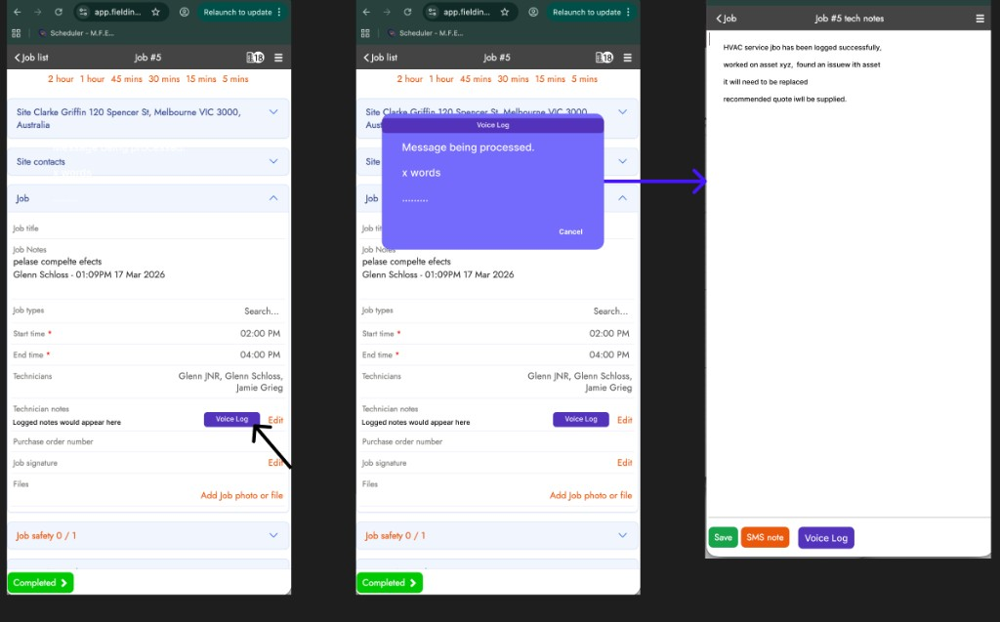

FI-001
Email / SMS / VOIP Scheduler
Two-way customer communication across Email, SMS, and VOIP — threaded inside the job record. AI-powered intent model built on Claude, interchangeable with Grok.
🔥 Active
High
🎨 Design
🏗 Product
🟢 Prototype Live
- Email thread panel within job record
- SMS mock interface — live simulation
- VOIP IVR flow — natural language booking
- AI interaction model: Claude (primary), Grok (swap)
- Intent extraction: book / reschedule / query / confirm
- Scheduler-triggered outbound across all channels
- Build: OAuth Gmail + Outlook
- Build: Twilio SMS + Conversations API
- Build: Twilio Voice + STT/TTS pipeline
- 🔗 Live Prototype · 📐 Voice IVR Spec · GitHub
FI-002
PO Multi-Supplier Price Books
Manage purchase orders across multiple supplier price books. Automatic cost calculations and margin visibility per supplier.
🔥 Active
High
🎨 Design
🏗 Product
🟢 Prototype Live
- Supplier selector at PO level
- Price book management screen
- Margin visibility per line item
- Switching supplier mid-PO flow
- API to attach multiple price books per trade type
- 🔗 Live Prototype · 📐 PDF Parsing Spec · GitHub
FI-002 · FI-003 · FI-004
Bill Importer
Import supplier bills and invoices directly into FieldInsight from email, PDF, or CSV. Auto-match to jobs and purchase orders. Reduce manual data entry for the office team.
🔥 Active
High
🏗 Product
v1.4.0
- Import via email attachment (PDF/CSV)
- OCR + AI field extraction (supplier, amount, date, line items)
- Auto-match to open POs and jobs
- Exception queue for unmatched bills (9-state lifecycle, persistent)
- CSV multi-invoice parser (Selected-Invoices + SMARTBIZ)
- Xero / MYOB sync on approval
- Audit trail — original bill stored against job
- 🔗 Live Prototype · 📐 FI-002 PDF Parsing · 📐 FI-003 Batch Bill · 📐 FI-004 CSV Import
🎨 Design Queue — Paul to action
Features waiting on design decisions before engineering can proceed.
High
🎨 Design
- Onboarding Checklist — step-by-step UX flow
- Asset Management v2 — service history layout
- Recurring Job Templates — template builder UI
- Customer Portal — self-service booking + invoice view
- Quote Approval Workflow — approver notification + sign-off UI
- Voice Job Logging — IVR call flow + confirmation readback
- IVR Self-Service Booking — phone flow for B2B clients
- SMS Booking — scheduler-triggered + job status-triggered flows
- Tech Job Notes — mobile note entry UX + note type selector
- Job Notes AI Enhancer — prompt picker UI + enhance flow
FI-004
Upgrade Link — Sales Team Tool
Smart upsell page for the sales team. Pre-fills customer context, tracks click + conversion per rep. Defined — waiting on priority slot.
⏳ Pending
High
📊 Sales Ops
🏗 Product
- One-click upgrade flow
- Personalised with plan + tier data
- Rep attribution tracking
- Smart URL — pre-fills customer context
FI-005
Onboarding Support Workflows — AI
Guided onboarding flows powered by AI. Triggered by usage signals — reduces support load and accelerates activation.
⏳ Pending
High
🎨 Design
🏗 Product
- In-app checklist component (persistent sidebar)
- Completion state + celebration moment
- AI suggestion tooltip pattern
- Usage signal triggers (first job, first invoice, etc.)
- AI recommendation engine per account state
- Target: −40% onboarding support tickets
FI-006
Business Insights via Data Ontologies
Actionable business intelligence from customer operational data — jobs, technicians, invoices, assets — structured via ontologies.
⏳ Pending
High
🎨 Design
🏗 Product
👔 CEO
- Insights dashboard — weekly digest layout
- Health score card component
- Industry benchmark comparison view
- Data ontology schema (jobs, techs, invoices, assets)
- Weekly insights generation pipeline
- Exportable PDF/CSV reports for owners
FI-007
Sales Metrics — SDR + AE Daily Tracker
Unified daily scorecard covering both SDR pipeline metrics and AE deal-stage tracking. Flags stale deals and missing next actions.
⏳ Pending
Medium
📊 Sales Ops
👔 CEO
- SDR: calls, connects, trials, bookings
- AE: deal age, next action, demos
- Stale deal alerts (>7 days no touch)
- No-next-action alerts (should be 0)
FI-021
AI Technician CoPilot — On-Device Gemma 4 (Edge Intelligence)
Embed a lightweight Gemma 4 2B/4B model directly into the FieldInsight mobile app (Android-first, iOS follow) via a Capacitor native plugin wrapping llama.cpp or Google's MediaPipe LLM Inference API. Technicians get a real-time AI assistant that works fully offline — in plant rooms, rooftops, and basements where connectivity is dead. The same open-weights model powers backend predictive analytics on the server fleet using the 26B/31B variants, and lays the groundwork for future autonomous robotic maintenance coordination.
High
🏗 Product
⚡ AI Powered
📱 Mobile
🤖 On-Device
- Why on-device, not cloud:
- 📵 Offline-first — plant rooms, rooftops, basements are dead zones; cloud AI is unavailable when it matters most
- ⚡ Near-zero latency — no 1–3s round-trips per step in a 10-point diagnostic checklist; on-device is instant
- 💰 Free at scale — 20 techs × 8 jobs/day × every photo/voice/report = significant API cost; local inference is free after deploy
- 🔒 Data sovereignty — customer asset data, fault photos, maintenance history never leaves the device; critical for enterprise and government clients
- Phase 1 — On-Device Mobile CoPilot (Android-first, Samsung ideal):
- 📱 Capacitor native plugin wrapping llama.cpp or Google MediaPipe LLM Inference API (targets Android NPU for hardware-accelerated inference)
- 📷 Technician scans QR code or photographs unit/serial plate → Gemma 4 vision + OCR reads error codes, visible defects (leaks, corrosion, fan issues)
- 🗂️ Offline SQLite/PouchDB asset history injected as context (existing FI data layer, no rebuild)
- 🔧 Real-time step-by-step troubleshooting guidance with safety/compliance checklists auto-populated
- 🛒 Part recommendations with on-device inventory cache check
- 📝 One-tap generation of professional service reports, defect notices, and quotes
- 🎙️ Voice (hands-free) interaction — tech speaks, AI responds, works while hands are on the unit
- 📲 Plugin interface:
FIAIPlugin.diagnose({ photo, assetHistory }) → structured JSON response back to web layer — no UI rebuild required
- Start text-only (asset context + fault codes), prove workflow, then layer in multimodal vision
- Phase 2 — Backend Predictive Asset Intelligence (26B/31B models on server):
- 📊 Analyse entire asset fleet overnight — predict failures before they happen using maintenance logs, usage patterns, environmental data
- 📅 Auto-generate optimised preventive maintenance schedules and dispatch jobs
- 🛣️ Route optimisation factoring in predicted urgent repairs
- 📄 Auto-populate customer reports with AI insights ("Unit X — 87% probability of compressor failure in next 6 months")
- Phase 3 — Optimus / Autonomous Robot Ready (Future):
- 🤖 Fine-tune "HVAC Specialist" Gemma 4 on aggregated anonymised FieldInsight asset + procedure data
- Same model powers robot reasoning: "Given this error code + photo, execute standard refrigerant recharge protocol while logging compliance"
- Bots handle repetitive tasks (filter changes, visual inspections, basic diagnostics) coordinated through existing FI job/asset workflow
- Apache 2.0 licence → commercial fine-tuning, local hosting, no recurring API costs
- Model selection:
- 🟢 2B / 4B edge variants → technician phones/tablets (low latency, offline)
- 🔵 26B MoE / 31B dense → server-side analytics and scheduling
- Source: Gemma 4 announcement (Google)
- Business outcomes:
- ✅ Reduce "phone-a-friend" calls to office — junior techs operate at senior level
- ✅ Cut average job time + repeat callouts (most costly outcome in HVAC)
- ✅ Improve first-time fix rate and technician confidence
- ✅ Higher-quality data back into asset database → continuous model improvement flywheel
- ✅ Turns FI from job management tool into AI-augmented platform that scales human techs today, robotic ones tomorrow
FI-020
SOC 2 Type II Compliance — US Market Launch
Security & compliance audit required to sell into US enterprise and mid-market field service businesses. SOC 2 Type II certifies that FieldInsight's infrastructure, data handling, and access controls meet the Trust Services Criteria (Security, Availability, Confidentiality) over a sustained observation period — typically 6–12 months. Critical gate for US logo acquisition and procurement approvals.
High
⚙️ Infra
🏗 Product
👔 CEO
🇺🇸 US Launch
- What SOC 2 Type II covers:
- ✅ Security — access controls, encryption at rest & in transit, vulnerability management, intrusion detection
- ✅ Availability — uptime SLAs, incident response, disaster recovery, monitoring
- ✅ Confidentiality — data classification, retention policies, NDA enforcement, data deletion procedures
- Key workstreams:
- 📋 Readiness gap assessment — map current controls to TSC criteria
- 🔐 Identity & access management — MFA enforcement, least-privilege review, offboarding audit
- 🛡️ Penetration testing — engage third-party pen tester on fieldinsight.com codebase
- 📝 Policy library — write / formalise: Information Security, Incident Response, Change Management, Vendor Risk, Business Continuity policies
- 📊 Continuous monitoring — tooling for log aggregation, alerting, anomaly detection (e.g. Datadog, Vanta, Drata)
- 🏢 Auditor engagement — select AICPA-accredited auditor for observation period + Type II report
- ⏱️ Timeline: ~6 months observation period + 2–4 months audit → target report by Q1 2027
- 💡 Suggested tooling: Vanta or Drata for compliance automation (maps to AWS/Heroku/GitHub controls automatically)
FI-008
IoT — HVAC Fault Monitoring & SMS Alerts (Daikin / Mitsubishi / Panasonic)
Hardware-to-cloud pipeline: a configurable IoT SMS device wired or wirelessly connected to the HVAC controller captures fault codes and sends SMS alerts to the FieldInsight platform before the customer knows anything is wrong. Proactive outreach turns reactive callouts into a predictive service revenue stream. Supports Daikin, Mitsubishi Electric, and Panasonic across VRF/VRV commercial and split system residential.
High
🏗 Product
⚙️ Infra
⚡ AI Powered
- Hardware options researched:
- 📦 S270 (Kirby HVACR — AU) — 4G SMS alarm unit, 2 digital inputs (fault relay), 2 analog inputs, 240V AC + battery backup, mobile app. Best fit for AU market.
- 📦 AIRTEK GCSMSB — BACnet IP SMS alarm module, alerts up to 10 phones, GSM 900/1800MHz, RS232 config. Enterprise BMS grade.
- 📦 LifeSmart LS175 HVAC Gateway — WiFi, supports Daikin, Mitsubishi, Panasonic, Hitachi, Toshiba. Zone control + fault monitoring. QR/app setup.
- Brand-specific protocol adapters:
- 🔌 Daikin — D-BACS BACnet interface (up to 512 indoor units) or DIII-NET/Modbus RS485 adapter. Daikin M2M cloud + AU monitoring app (needs BTSC/i2S adapter).
- 🔌 Mitsubishi Electric — MICRO M2M SMS Interface (up to 8 units, direct SMS fault codes) or PANEL_RS_SMS (includes fire alarm input). ME-AC-SMS-32 for larger installs.
- 🔌 Panasonic — HMS Networks MQTT Gateway (ECOi/PACi to AWS/Azure), CZ-CFUNC2 BMS serial adapter, or PAW-AC-MBS-1 Modbus interface.
- Configuration methods: WiFi app · Bluetooth · QR code scan · RS485 wired · BACnet IP
- FieldInsight integration layer:
- Inbound SMS fault webhook → parse fault code → lookup error library → classify severity
- AI triage: recommend action, auto-draft job, assign technician
- Proactive client SMS/email: "We detected a fault on your unit — want us to book a check?"
- Technician briefed with full fault history before attending site
- Failure trend dashboard — units, fault types, clients, repeat offenders
- Next step: Evaluate S270 (AU 4G) + Daikin DIII-NET Modbus adapter as pilot hardware stack
FI-009
AI Notes Enhancer — Voice to Job Notes
Tech taps Voice Log on the mobile job record, speaks their notes naturally, watches the word count tick up live, then gets a polished AI-enhanced note ready to save — same interaction pattern as the VOIP scheduler (speak → processing pause → clean output). Notes flow to the scheduler, office staff, and the client-facing job summary.

High
🎨 Design
🏗 Product
⚡ AI Powered
- Voice flow (as per VOIP Scheduler UX):
- ① Tap Voice Log — microphone activates on job record
- ② Speak freely — live word count displayed as you talk
- ③ Processing pause — "Message being processed…" with animated dots
- ④ AI-enhanced note appears — reviewed by tech before saving
- ⑤ Actions: Save · SMS note to client · Voice Log again
- Prompt library (select before speaking):
- 📋 Service Notes — professional summary of work performed
- 💰 Build a Quote — structured scope + cost from rough description
- ⚠️ Defect Found — plain-language defect description for client
- ⚠️💰 Defect Found + Quote Required — defect detail + remediation scope
- 🔁 Follow-up / Return Visit — what's outstanding and why
- Note type selector on job record: Service Notes · Quote · Defect · Defect+Quote · Follow-up
- Scheduler panel — office sees all tech notes per job in real time
- Editable prompts — admin customises or adds new prompt types
- Original voice transcript + AI output shown side-by-side in scheduler
- Photo attachments to note — evidence, defect photos, meter readings
- Client-facing sanitised summary auto-included in job completion email
FI-010
Asset Management Improvements
Enhanced asset tracking, service history, and warranty management.
Medium
🎨 Design
🏗 Product
FI-011
Recurring Job Templates
Schedule and auto-generate recurring maintenance jobs from templates.
Medium
🎨 Design
🏗 Product
FI-012
Customer Portal — Self Service
Let customers view their jobs, invoices, and book service online.
Medium
🎨 Design
🏗 Product
FI-013
AI-Optimised Routing
Advanced scheduling using AI to optimise technician routes and reduce drive time.
Low
🏗 Product
FI-014
Quote Approval Workflows
Internal approval steps before quotes are sent — manager sign-off, margin checks.
Low
🎨 Design
🏗 Product
FI-015
Stripe Payment Links on Invoices
One-click payment links embedded in invoice emails — pay online instantly.
Medium
🏗 Product
FI-016
Voice Job Logging — IVR with Claude
Field techs call in and speak naturally to log job details. Claude extracts structured data. Multi-model — Claude now, Grok later.
High
🎨 Design
🏗 Product
- Voice-to-job creation flow (call → structured record)
- Confirmation readback UX
- Twilio Voice + speech-to-text pipeline
- Claude prompt to extract job fields from speech
- FieldInsight API write-back for job creation
- Future: Swap in Grok for real-time voice model
FI-017
IVR Self-Service Job Booking — B2B
Inbound phone flow for B2B clients to book a job without speaking to a human. Twilio Voice + Claude TTS/STT.
High
🎨 Design
🏗 Product
- IVR call flow — greeting, job type, address, time slot
- Confirmation + calendar invite to client
- Scheduler dashboard showing self-booked appointments
- Claude for natural language slot negotiation
- Auto job creation on booking confirmation
FI-019
Gmail Inbox — Job Request Monitor & Thread Reply
Gmail OAuth2 integration to monitor a nominated address (e.g. jobs@fieldinsight.com) for inbound job requests. AI classifies each thread — urgency, job type, one-line summary — and suggests a reply. Full thread view with reply composer stays in the same Gmail thread. Prototype live.
🔥 Active
High
🎨 Design
🏗 Product
🟢 Prototype Live
⚡ AI Powered
- Google OAuth2 — connect any Gmail account in one click
- Watch a nominated address for inbound job-request emails
- AI classification: is it a job request? urgency? job type? 1-line summary
- Full thread view — all messages collapsed/expanded, read receipts
- Reply composer — stays threaded in Gmail (correct In-Reply-To headers)
- ⚡ AI Suggest Reply — Claude drafts a warm professional response
- Filter: All · Unread · Job Requests · Sent
- Auto-refresh every 60 seconds
- Settings: configure watch address per deployment
- 🔗 Live Prototype · GitHub
FI-018
SMS Job Booking — Scheduler + Status Triggered
Scheduler sends a booking link via SMS, or job status change triggers a self-booking request. Client replies to confirm time and details.
High
🎨 Design
🏗 Product
- Scheduler-triggered SMS flow
- Job status trigger ("Job complete — book follow-up")
- NLP reply parser (Claude) for time slot extraction
- Twilio Conversations API — thread-per-booking
FI-022
🔌 FieldInsight Public API + OAuth + MCP Server
Bridge the FieldInsight Public API into Alfred, Claude Desktop, Cursor, and any MCP-aware agent. Standard OAuth 2.0 Authorization Code Grant → encrypted token store → typed API client → MCP tool layer. Staged in four phases — Phases 1–3 are CORE, Phase 4 is Nice to Have. ~3.5–5 day MVP to first live agent query across the full FI surface.
High
🏗 Product
⚙️ Infra
🎩 Alfred
🔌 MCP
🔐 OAuth 2.0
- Why now: Alfred, Cursor, and Claude Desktop can't read FieldInsight data today — no jobs, customers, or timesheets. One clean OAuth + MCP bridge unlocks every agent we own.
- API shape (confirmed): REST over HTTPS · base
https://app.fieldinsight.com/public-api/ · OAuth 2.0 Authorization Code Grant · 10-hour access tokens · refresh tokens supported · apidog docs →
- Phase 1 · CORE — OAuth Foundation (~1 day): register app ·
/oauth/authorize redirect · /oauth/token/ exchange · encrypted multi-tenant token store · auto-refresh within 5min of expiry
- Phase 2 · CORE — Typed API Client (~0.5–1 day): wraps public-api · auto-refresh on 401 · exponential backoff on 429 · typed models for Job / Customer / Timesheet / Site / Technician · pagination helper
- Phase 3 · CORE — 14 MCP Read Tools (~2–3 days): jobs · customers · technicians · timesheets · assets · defects · quotes · invoices · supplier invoices · purchase orders · products · service items — full FI operational surface, shipped as a standalone
fi-mcp package with manifest + README
- 🟢 Definition of Done (end of Phase 3): Ask an agent "list today's jobs", "show overdue invoices", "what defects are open on asset X?", or "list POs sent this week" and get a real answer via MCP — no credentials leave the token service.
- Phase 4 · Nice to Have (~2–3 days): write-capable tools (create / update / complete job, guarded by
confirm=true) · Alfred WhatsApp integration · production hardening · OPTIONAL items: reverse-engineered OpenAPI spec, webhook ingestion, photo-attach tool, Prometheus metrics, one-line installer
- Known risks: no OpenAPI spec · no sandbox (use throwaway tenant) · undocumented rate limits · app approval may slip schedule · webhook support unknown
- 📐 Full Spec — FI-022 OAuth + MCP → · FieldInsight API Docs → · Help Center — Job API →
FI-023
✦ FieldInsight AI Agent Stack
The complete AI agent layer for FieldInsight — 25 saint-named agents across 9 departments, a Palantir-style knowledge graph (Fiona AI), LLM routing (Claude primary / Grok swappable / Gemma 4 on-device), and a unified org chart from CEO Pete down to front-line agents. Live reference page documents every agent, tech decision, and prototype link in one place.
High
🏗 Product
🎩 Alfred
⚙️ Infra
✦ 25 Agents
⚡ AI Powered
- Holy Hierarchy: 25 agents, each named after a saint whose legend maps to their SaaS role — CEO (Pete / Simon Peter) through Security Agent (Geo / George the Dragon Slayer)
- Fiona AI (FI-04): Palantir-style Neo4j knowledge graph over Company → Site → Asset → Job → Technician. LangGraph agent answers natural language questions with cited graph nodes. AU data residency.
- LLM Routing: Claude Sonnet 4.5 (primary) · Claude Haiku 4.5 (cost fallback) · Grok-4 (swappable, 1-file change) · Gemma 4 2B/4B (on-device, technician mobile)
- Voice Layer: Fiona IVR agent on Twilio Voice + STT/TTS · SMS via Twilio Conversations · Gmail monitoring via OAuth2
- Tech decisions locked: Neo4j AuraDB Sydney · LangGraph agent framework · FastAPI (Python) + Express (Node) · Heroku + Fly.io SYD
- 🟢 Live Reference Page → · GitHub (private) →